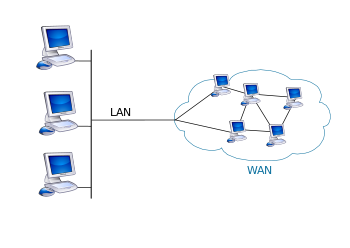

¿Qué es una WAN (red de área amplia)?
01 de Marzo 2024 por Jeferson Caleb Guerra Sorto
Una red de área amplia, o WAN (wide area network en inglés), es una red de computadoras que une e interconecta varias redes de ámbito geográfico mayor, por ejemplo redes de área local, aunque sus miembros no estén todos en una misma ubicación física. Muchas WAN son construidas por organizaciones o empresas para su uso privado, otras son instaladas por los proveedores de Internet (ISP) para proveer conexión a sus clientes.
Hoy en día, internet brinda conexiones de alta velocidad, de manera que un alto porcentaje de las redes WAN se basan en ese medio, reduciendo la necesidad de redes privadas WAN, mientras que las redes privadas virtuales utilizan cifrado y otras técnicas para generar una red dedicada sobre comunicaciones en Internet.
Características Principales

Posee máquinas dedicadas a la ejecución de programas de usuario (hosts).
Una sub-red, donde conectan varios hosts.
División entre líneas de transmisión y elementos de conmutación (enrutadores).
Es un sistema de interconexión de equipos informáticos geográficamente dispersos, que pueden estar incluso en continentes distintos. El sistema de conexión para estas redes normalmente involucra a redes públicas de transmisión de datos.
Ventajas
Permite usar un software especial para que entre sus elementos de red coexistan minicomputadoras y macrocomputadoras.
No se limita a espacios geográficos determinados.
Ofrece una amplia gama de medios de transmisión, como los enlaces satelitales.
Brinda mayor seguridad al tener un control de acceso en tiempo real.
Proporciona una administración simplificada.
Da prioridad en conexiones a aplicaciones críticas, respecto a las no críticas.
Presenta la posibilidad de establecer el servicio sin necesidad de cambiar las redes existentes.
Desventajas
Se deben emplear equipos con una gran capacidad de memoria, ya que este factor repercute directamente en la velocidad de acceso a la información.
No destaca por la seguridad que ofrece a sus usuarios. Los virus y la eliminación de programas son dos de los males más comunes que sufre la red WAN.